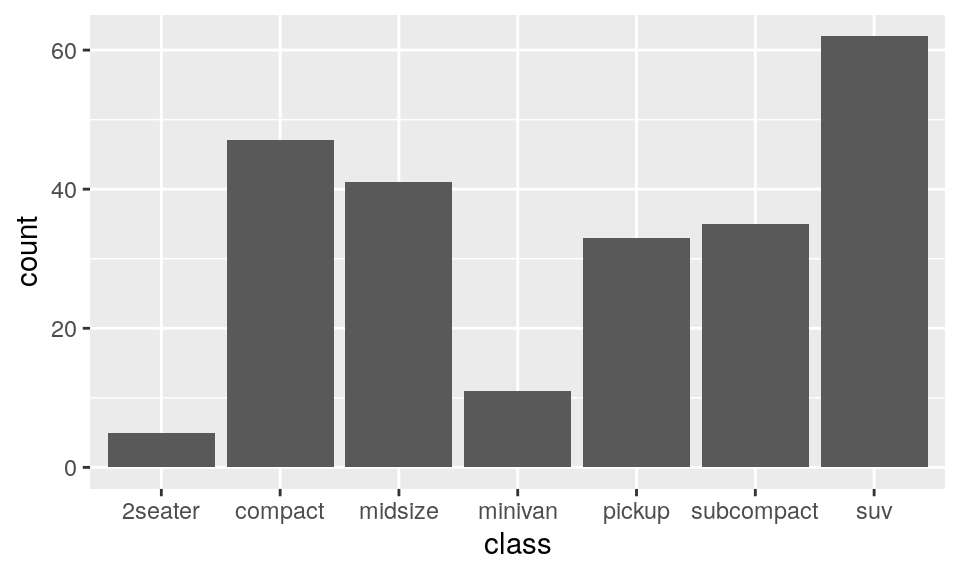
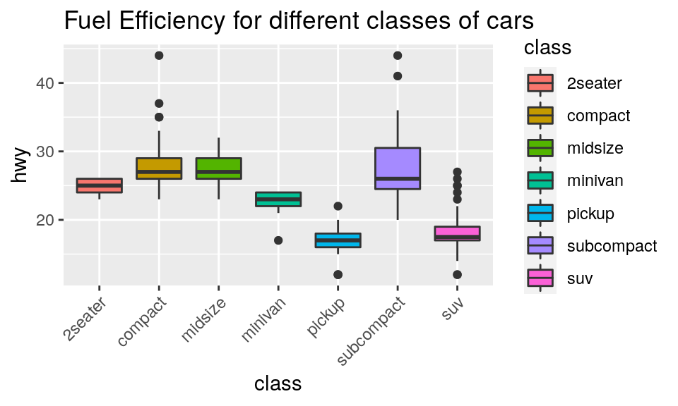

Visualization is one of the most important tools for data science.
The tutorial focuses on three basic skills:
Packages are the fundamental units of reproducible R code. They include reusable functions, the documentation that describes how to use them, and sample data. In this lesson we will make use of two packages:
Tidyverse is a collection of R packages for data science that adhere to a common philosophy of data and R programming syntax, and are designed to work together naturally. You can learn more about tidyverse here. But no need to go digging through the package documentation, we will walk you through what you need to know about these packages as they become relevant.
Once we have installed the packages, we use the
library() function to load packages into R.
Let’s load the packages to be used in the remainder of this lesson.
library(tidyverse)The mpg sample dataset is included in the
ggplot2 package. mpg contains observations
collected on 38 models of cars by the US Environmental Protection
Agency.
To see the mpg data frame, type mpg in the
code block below and click “Submit Answer”. You can use the black
triangle that appears at the top right of the table to scroll through
all of the columns in mpg.
mpgAmong the variables in mpg are:
displ, a car’s engine size, in liters.hwy, a car’s fuel efficiency on the highway, in miles
per gallon (mpg). A car with a low mpg consumes more fuel than a car
with a high mpg when they travel the same distance.Now let’s use this data to make our first graph.
The code below uses functions from the ggplot2
package to plot the relationship between displ and
hwy.
To see the plot, click “Run Code.”
ggplot(data = mpg) +
geom_point(mapping = aes(x = displ, y = hwy))Can you spot the relationship?
In the plot below, one group of points (highlighted in red) seems to fall outside of the linear trend between engine size and gas mileage. These cars have a higher mileage than you might expect. How can you explain these cars?
You can add a third variable, like class, to a two
dimensional scatterplot by mapping it to a new
aesthetic. An aesthetic is a visual property of the
objects in your plot. Aesthetics include things like the size, the
shape, or the color of your points. You can display a point in different
ways by changing the values of its aesthetic properties.
We can add the class variable to the plot by mapping the
levels of an aesthetic (like color) to the values of class.
For example, we can color a point green if it belongs to the compact
class, blue if it belongs to the midsize class, and so on.
Let’s give this a try. Fill in the blank piece of code below with
color = class. What happens? Delete the commenting symbols
(#) before running your code. (If you prefer British
English, you can use colour instead of
color.)
# ggplot(data = mpg) +
# geom_point(mapping = aes(x = displ, y = hwy, ____________))Hint: Be sure to remove all of the underlines and hashtags from the code.
ggplot(data = mpg) +
geom_point(mapping = aes(x = displ, y = hwy, color = class))The colors reveal that many of the unusual points in mpg
are two-seater cars. These cars don’t seem like hybrids, and are, in
fact, sports cars! Sports cars have large engines like SUVs and pickup
trucks, but small bodies like midsize and compact cars, which improves
their gas mileage. In hindsight, these cars were unlikely to be hybrids
since they have large engines.
This isn’t the only insight we’ve gleaned; you’ve also learned how to add new aesthetics to your graph. Let’s review the process.
To map an aesthetic to a variable, we set the name of the aesthetic
equal to the name of the variable, and do this inside
mapping = aes(). ggplot2 will automatically assign a unique
level of the aesthetic (here a unique color) to each unique value of the
variable. ggplot2 will also add a legend that explains which levels
correspond to which values.
This insight gives us a new way to think about the mapping argument. Mappings tell ggplot2 more than which variables to put on which axes, they tell ggplot2 which variables to map to which visual properties. The x and y locations of each point are just two of the many visual properties displayed by a point.
In the above example, we mapped color to class, but we
could have mapped size to class in the same way.
Change the code below to map size to class.
What happens?
ggplot(data = mpg) +
geom_point(mapping = aes(x = displ, y = hwy, color = class))Hint: If color controls the
aesthetic, what word do you suppose controls the size
aesthetic?
ggplot(data = mpg) +
geom_point(mapping = aes(x = displ, y = hwy, size = class))You can also map class to the alpha
aesthetic, which controls the transparency of the points. Try it
below.
ggplot(data = mpg) +
geom_point(mapping = aes(x = displ, y = hwy))Hint: If color controls the
aesthetic, what word do you suppose controls the alpha
aesthetic?
ggplot(data = mpg) +
geom_point(mapping = aes(x = displ, y = hwy, alpha = class))Let’s try one more aesthetic. This time map the class of the points
to shape, then look for the SUVs. What happened?
ggplot(data = mpg) +
geom_point(mapping = aes(x = displ, y = hwy))Hint: If color controls the
aesthetic, what word do you suppose controls the shape
aesthetic?
ggplot(data = mpg) +
geom_point(mapping = aes(x = displ, y = hwy, shape = class))Make a scatterplot of cty vs hwy.
ggplot(data = mpg) +
geom_point(aes(x = hwy, y = cty))Modify the code below to map cty, which is a continuous
variable, to color, size, and
shape.
cty to colorggplot(data = mpg) +
geom_point(mapping = aes(x = displ, y = hwy))ggplot(data = mpg) +
geom_point(mapping = aes(x = displ, y = hwy))ggplot(data = mpg) +
geom_point(mapping = aes(x = displ, y = hwy))How do these aesthetics behave differently for continuous variables,
like cty, vs. categorical variables, like
class?
Make a histogram of the hwy variable from the
mpg dataset. Make the bins 2 units wide.
Hint: - You should not supply a \(y\) aesthetic when you use
geom_histogram() - Use the help page for
geom_histogram or consult the ggplot2 cheatsheet if
needed.
ggplot(data = mpg) +
geom_histogram(aes(x = ________),_____=______)ggplot(data = mpg) +
geom_histogram(aes(x = hwy), binwidth = 2)A variable is categorical if it can take only one of a small set of values. You can visualize the distribution of a categorical variable with a bar chart.
geom_bar() layer
to the plot.The bar chart below visualizes the distribution of the
class variable in the mpg data set, which
comes in the ggplot2 package.
ggplot(data = mpg) +
geom_bar(aes(x = class)) ** Remark: **
You should not supply a \(y\)
aesthetic when you use geom_bar(); ggplot2 will count how
many times each \(x\) value appears in
the data, and then display the counts on the \(y\) axis.
In histogram and bar charts, tall bars show the common values of a variable, i.e. the values that appear frequently. Shorter bars show less-common values, i.e. values that appear infrequently. Places that do not have bars reveal values that were not seen in your data. To turn this information into useful questions, look for anything unexpected:
A stacked bar chart adds another layer to the plot, by dividing each
bar into different levels of another variable. This coloring of the bars
comes from adding a second categorical variable into the
fill argument of the aes() function.
This looks something like this:
ggplot(data = mpg) +
geom_bar(aes(x = class, fill=drv)) Remark:
drv: the type of drive train, where f = front-wheel
drive, r = rear wheel drive, 4 = 4wdgeom_bar() lays out the rectangles by stacking
rectangles that have the same class value on top of one
another. You can change this behavior with a position
adjustment.
To place rectangles that have the same class value
beside each other, set position = "dodge". Add the argument
position = "dodge" to the geom_bar() below and
observe the change to the bar chart.
ggplot(data = mpg) +
geom_bar(aes(x = class, fill=drv), _____________) ggplot(data = mpg) +
geom_bar(aes(x = class, fill=drv), position = "dodge") Answer the questions using the following chart.

Create a bar chart class colored by class
to recreate the graph above.
geom_bar or the
ggplot cheatsheet to choose a “color” aesthetic for
class. + theme(axis.text.x = element_text(angle = 45, hjust = 1))ggplot(_____________) +
______________________ +
theme(axis.text.x = element_text(angle = 45, hjust = 1))ggplot(data = mpg) +
geom_bar(mapping = aes(x = class, fill = class))+
theme(axis.text.x = element_text(angle = 45, hjust = 1))Faceting breaks the data into subsets based on the levels of a categorical variable and then constructs a subplot for each level.
ggplot2 provides two functions for facetting:
facet_grid() and facet_wrap().
facet_wrap()facet_wrap() provides a way to facet a plot on a
single variable. It will split the plot into subplots and then
reorganize the subplots into multiple rows so that each plot has a more
or less square aspect ratio.
To add a faceting layer we use the facet_wrap()
function. Inside the facet_wrap() function we add a tilde
(~) and then the name of the variable we want to facet by
(e.g. ~ class). This can be read as creating the above plot
“broken down by class”.
Example:
ggplot(mpg) + geom_point(aes(x = displ, y = hwy)) +
facet_wrap(~ class)facet_grid() divides the plot into a grid of subplots
based on the values of one or two facetting variables. To use it, add
facet_grid() to the end of your plot call.
** Example:**
q <- ggplot(mpg) + geom_point(aes(x = displ, y = hwy))
q + facet_grid(drv ~ cyl)
q + facet_wrap(~ class)As you saw in the code examples, you use facet_grid() by
passing it a formula, the names of two variables connected by a
~.
facet_grid() will split the plot into facets vertically
by the values of the first variable: each facet will contain the
observations that have a common value of the variable.facet_grid() will split the plot horizontally by values
of the second variable. The result is a grid of facets, where each
specific subplot shows a specific combination of values.facet_grid() a . instead of a variable
name as a place holder.** Example:**
q <- ggplot(mpg) + geom_point(aes(x = displ, y = hwy))
q + facet_grid(. ~ cyl)
q + facet_grid(drv ~ .)Boxplot allows you to visualize the distribution of continuous variables.
Here is a boxplot for showing the distribution of highway miles per
gallon (hwy).
ggplot(data = mpg) +
geom_boxplot( aes( y = hwy))You can visualize the relationship between one continuous and one
categorical variable by using a boxplot. For instance, to create a box
plot to compare the fuel efficiencies of different types of cars, modify
the code below to add a mapping of the y-xis to the hwy
attribute.
ggplot(data = mpg) +
geom_boxplot(aes(x = ________ , y = hwy))ggplot(data = mpg) +
geom_boxplot( aes(x = class, y = hwy))
Recreate the chart above.